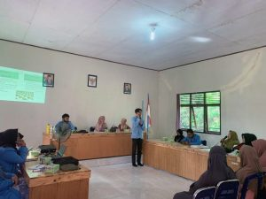

Siabu, (suaraaura.com)- Mahasiswa Kuliah Kerja Nyata (KKN) dari Universitas Riau telah menggelar acara sosialisasi yang bertema “Mengolah Sampah Untuk Mengurangi Limbah Menuju Lingkungan Yang Lebih Bersih” pada hari Sabtu, 15 Juli 2023. Kegiatan tersebut bertempat di aula kantor desa Siabu, kecamatan Salo, kabupaten Kampar, dan dihadiri oleh ibu-ibu PKK setempat.
Dosen yang tergabung dalam tim Kukerta di Kecamatan Salo yakni Resdati, S.Sos.,M.Si. Sementara, 9 mahasiswa Kukerta UNRI 2023 yang ikut dalam kegiatan sosialisasi ini adalah Cory Rizka Riadi, Junaidi, Muhammad Al Ghifari, Nona Larasati Azizar, Novtasya Simatupang, Nur Awfiah Nadhila, Qori Gita Cahyani, Sahrul Ramadhan, Umayatun Mardhiyah.
Acara ini bertujuan untuk memberikan pemahaman kepada masyarakat tentang pentingnya pemanfaatan ulang sampah plastik dan pengurangan limbah rumah tangga melalui metode hidroponik dan pembuatan kompos dari sampah organik rumah tangga.
Dalam sesi pertama, mahasiswa KKN Universitas Riau mengenalkan konsep hidroponik menggunakan botol plastik sebagai wadahnya. Metode ini merupakan solusi inovatif dalam memanfaatkan kembali sampah plastik yang sering menjadi sumber permasalahan lingkungan. Dengan hidroponik, masyarakat dapat menanam berbagai jenis tanaman secara efisien tanpa menggunakan tanah, sehingga dapat menghemat ruang dan air serta berpotensi meningkatkan produktivitas pertanian. Dalam presentasinya, ketua kelompok KKN, Muhammad Al Ghifari, menjelaskan manfaat besar dari metode hidroponik berwadah botol plastik. Ia menyampaikan,
“Metode ini dapat meningkatkan efisiensi penggunaan air dan nutrisi tanaman, mengurangi resiko hama dan penyakit tanaman, serta memungkinkan pertanian di daerah terbatas seperti perkotaan dan pedesaan yang minim lahan. Selain itu, penggunaan botol plastik bekas sebagai wadahnya juga membantu mengurangi sampah plastik yang berdampak negatif pada lingkungan.”Tidak hanya memberikan pemaparan teori, para mahasiswa juga menunjukkan secara langsung bagaimana cara mengolah botol plastik bekas menjadi pot hidroponik yang fungsional.
Mereka secara interaktif membantu warga Desa Siabu untuk memulai menanam sayuran menggunakan metode hidroponik ini. Para peserta sosialisasi terlihat antusias dan bersemangat untuk mencoba teknik baru yang mereka pelajari. “Kami berharap dengan mengajarkan hidroponik menggunakan botol plastik, masyarakat dapat melihat betapa mudahnya mendaur ulang sampah plastik menjadi sesuatu yang berguna bagi kehidupan sehari-hari,” ujar Junaidi, salah satu mahasiswa KKN.(***)